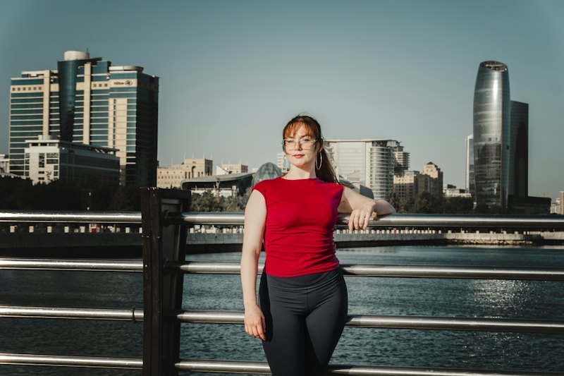
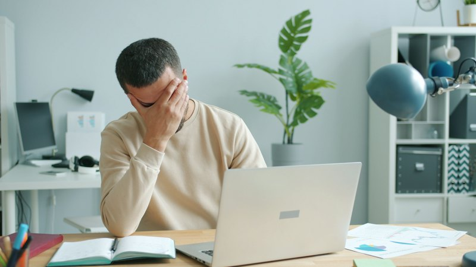

Pourquoi Déclic a sa place sur le marché
Le problème, la cible, le marché, la concurrence, le prix et le modèle économique. Chaque chiffre de marché renvoie à sa source ; les chiffres sans source sont présentés comme des estimations, avec leur calcul.
Beaucoup veulent tester un nouveau sport, peu passent à l'acte
des Français de 15 ans et plus déclarent vouloir commencer une nouvelle activité physique dans les 12 prochains mois (26 % des pratiquants occasionnels).
Source : INJEP / CRÉDOC, Baromètre national des pratiques sportives 2025, p. 47
des pratiquants réguliers aimeraient pratiquer davantage. Leur premier frein : les contraintes professionnelles et familiales, puis le coût.
Source : INJEP / CRÉDOC 2025, p. 48-50
des non-pratiquants citent un coût trop élevé comme raison de ne pas faire de sport.
Source : INJEP / CRÉDOC 2025, p. 49
Qui le vit ?
Les jeunes actifs franciliens (25-35 ans) qui ont arrêté le sport en entrant dans la vie active, ou qui ont pris un abonnement en salle sans jamais y aller. Ils ne savent pas quel sport leur plairait et n'osent pas débarquer seuls dans un club de pratiquants confirmés.
À quelle fréquence ?
Le problème revient à chaque « moment de bonne résolution » (janvier, rentrée de septembre, retour de vacances) et à chaque fois qu'un abonnement est abandonné. Estimation : 2 à 3 tentatives par an, à confirmer par une enquête auprès de 50 personnes de la cible.
Ce qu'il coûte aujourd'hui
Tester seul un sport à Paris, c'est payer un cours à l'unité, soit environ 25 à 35 € la séance dans un studio parisien (source), plus le petit matériel et le temps de recherche. Estimation pour tester 3 sports : 3 × 30 € + 3 × 10 € de matériel = environ 120 €, souvent sans encadrement débutant.
Deux personas précis

« La curieuse qui s’ennuie à la salle »Camille, 27 ans
- Métier
- Chargée de communication dans une agence, Paris 11e
- Revenus
- Environ 2 300 € net/mois
- Budget sport
- 40 €/mois maximum
- S'informe sur
- Instagram, TikTok, newsletters « sorties à Paris », recommandations d'amis
- Problème
- A résilié sa salle après 4 mois. Veut bouger mais déteste la routine et n'ose pas aller seule dans un club.
- Ce qu'elle attend
- De la nouveauté, un cadre bienveillant pour débutants, un format qui se partage en story.
- Formule visée
- Déclic Mensuel (39 € TTC)

« Le sédentaire qui veut s’y remettre à deux »Mehdi, 33 ans
- Métier
- Chef de projet informatique, 3 jours de télétravail, Boulogne-Billancourt
- Revenus
- Environ 3 200 € net/mois
- Budget sport
- 70 €/mois pour lui et sa compagne
- S'informe sur
- LinkedIn, YouTube, podcasts, avis Google
- Problème
- Mal de dos lié au télétravail, a fait du foot jusqu'à 22 ans puis plus rien. Manque de temps et de motivation seul.
- Ce qu'il attend
- Une activité organisée à l'avance, à faire en couple, sans engagement d'un an.
- Formule visée
- Déclic Duo (69 € TTC/mois)
Personas construits à partir des tendances du baromètre INJEP 2025 ; prénoms, revenus et budgets sont des hypothèses de travail. Photos d'illustration (Unsplash) : elles ne représentent pas les personnes décrites.
Une pratique sportive en hausse, qui sort des clubs
des 15 ans et plus pratiquent une activité sportive au moins une fois par semaine en 2025, soit +7 points depuis 2018.
seulement des pratiquants font du sport principalement en club (24 % en 2018) : la pratique se fait de plus en plus hors structure.
de chiffre d'affaires pour les loisirs sportifs marchands en 2024, porté notamment par le padel.
d'habitants en Île-de-France au 1er janvier 2025, notre zone de lancement.
Taille du marché
Marché global (France) : la filière sport a généré 71 Md€ de chiffre d'affaires en 2022, dont environ 10 % pour la « pratique » (coaching, enseignement, salles et centres) (Annales des Mines, 2024).
Marché accessible (Île-de-France, 25-39 ans curieux) : estimation.
Objectif à 12 mois : 500 abonnés actifs, soit environ 0,1 % des 520 000 personnes du marché accessible.
Séries INSEE par âge : estimations de population 2025
Croissance et tendances
- La pratique progresse : 61 % de pratiquants réguliers en 2025 contre 54 % en 2018 (source).
- Les 15-29 ans et 30-59 ans sont les plus actifs : 84 % et 75 % de pratique régulière (source).
- La pratique guidée hors club monte : 16 % pratiquent hors structure avec une application ou des instructions, +8 points (INJEP 2025, p. 41).
- Le marché des articles de sport devrait atteindre 27 Md€ en 2030, soit +13 % sur 2024-2030 selon Circana (source).
- Effet Jeux de Paris 2024 : le ministère parle d'une progression « boostée par les Jeux » (source).
Lecture : la demande existe et grandit, mais elle se tourne vers des formats souples, hors club. C'est exactement le créneau de Déclic.
Des offres pour sportifs déjà motivés, pas pour débutants indécis
| Acteur | Offre | Prix | Encadrement débutant | Matériel / guide | Ce qui nous distingue |
|---|---|---|---|---|---|
| Urban Sports Club | Accès à 50+ disciplines dans des salles partenaires, réservation libre | 29 €/mois (Essential, 4 check-ins) à 154 €/mois · source | Non garanti, cours tous niveaux | Non | Déclic choisit le sport pour toi et garantit un groupe 100 % débutants |
| ClassPass | Abonnement à crédits, studios fitness, yoga, boxe… | 75 €/mois pour 47 crédits (forfait par défaut à Paris), de 19 € à 199 €/mois · source | Non garanti | Non | Prix fixe et lisible, pas de système de crédits variables |
| Wonderbox (coffret « Évasion sportive ») | Coffret cadeau pour 1 activité sportive ponctuelle | 49,90 € l'activité · source | Variable selon le prestataire | Non | Un parcours de 12 sports dans la durée, et pas une expérience unique |
| EGYM Wellpass (ex-Gymlib) | Abonnement multi-salles cofinancé par l'employeur | Prix variable selon le cofinancement de l'entreprise ou du CSE partenaire · source | Non | Non | Accessible à tous, sans passer par son employeur |
| Déclic | 1 sport imposé par mois, séance d'initiation en groupe de débutants + kit + guide | 39 € TTC/mois · 35 € en Trimestre · 34,50 €/pers. en Duo | Oui, 100 % débutants, groupes de 8 à 12 | Oui, kit et guide chaque mois | La seule offre pensée pour « trouver son sport » |
Prix relevés en novembre 2026 sur les pages citées. Les marques citées sont des concurrents ; aucune ne travaille avec Déclic.
39 € TTC/mois : comment on l'a fixé
① Par rapport aux concurrents
Nous sommes au-dessus de l'entrée de gamme d'Urban Sports Club (29 €), mais elle n'inclut ni encadrement débutant ni matériel. Nous sommes en dessous du forfait par défaut de ClassPass (75 €) et d'un coffret Wonderbox pour une seule activité (49,90 €). Positionnement : « premium accessible ».
② Par les coûts (estimation)
③ Par la valeur pour le client
Pour le même budget qu'un test en solo (environ 30 € la séance à Paris, source, plus environ 10 € de matériel, estimation), Déclic ajoute ce qu'un cours à l'unité n'offre pas :
- un groupe 100 % débutants, donc pas la peur d'arriver seul·e parmi des confirmés ;
- le sport, la salle et le créneau choisis pour toi : zéro recherche, zéro charge mentale ;
- un guide pour savoir quoi faire avant et après la séance ;
- -15 % pour continuer dans la salle si le sport te plaît.
Le client ne paie pas une séance moins chère : il paie la certitude d'oser y aller, et de trouver son sport.
Pourquoi c'est cohérent avec le marché
39 € se situe dans la fourchette des offres sport sans engagement (29 € à 75 €), reste sous le budget de 40 €/mois de notre persona principale, et dégage environ 33 % de marge brute. La formule Trimestre (35 €/mois) et le Duo (34,50 €/personne) récompensent l'engagement et la recommandation.
Un abonnement, trois sources de revenus
Abonnements
Mensuel, Trimestre et Duo. C'est le cœur du chiffre d'affaires (environ 90 % visé).
Séances supplémentaires
15 € TTC la séance pour refaire le sport du mois. Marge élevée, aucun kit à envoyer.
Commission partenaires
10 % de commission (à négocier) quand un abonné s'inscrit dans la salle du mois avec sa réduction Déclic.
Objectif chiffré à 12 mois : 500 abonnés actifs
De décembre 2026 à novembre 2027. Toutes les données ci-dessous sont des estimations.
Ce qu'il faut vendre pour y arriver
Jalons
- Mois 1 : 10 premiers clients (voir le plan de communication)
- Mois 3 : 126 abonnés actifs, 3 salles partenaires
- Mois 6 : 252 abonnés, ouverture des créneaux week-end en petite couronne
- Mois 12 : ≈ 500 abonnés (504), ≈ 17 600 € HT de CA mensuel
Toutes les sources du dossier
- INJEP / CRÉDOC, Baromètre national des pratiques sportives 2025 (PDF)
- Ministère des Sports, « Sport en France : une progression continue depuis 2018 »
- INSEE Flash Île-de-France n° 100, Bilan démographique 2024
- INSEE, Estimation de la population au 1er janvier 2025 par âge
- Annales des Mines, Enjeux numériques, juin 2024 (poids économique de la filière sport)
- Viralmag, bilan Union Sport & Cycle 2024
- L'Express Franchise, prévision Circana 2030
- Urban Sports Club, tarifs Paris
- ClassPass, forfaits et tarifs (Paris)
- Wonderbox, coffret cadeau « Évasion sportive »
- EGYM Wellpass (ex-Gymlib), offre salariés
- Parrain du Web, prix d'un cours en studio parisien